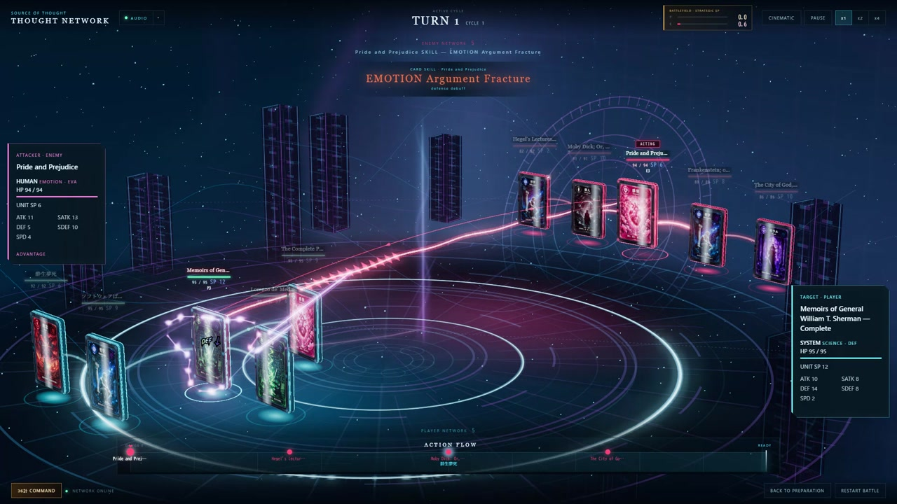
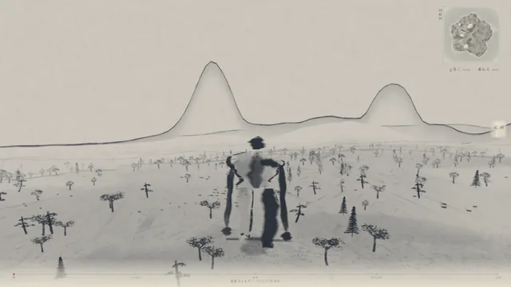
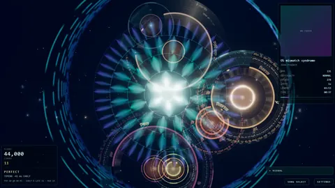
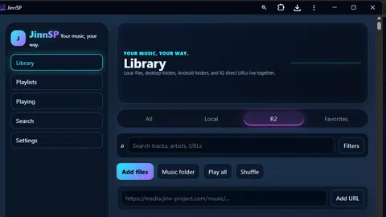

独立研究開発プロジェクト
見えない構造を、見えるかたちに。
Jinn Projectは、意味・認知・文化を、オープンな研究ツール、遊べるシステム、公開アプリへと変換し、その仕組みまで公開しています。
01代表作 · プレイ可能
思想が、遊べる戦略になる。
Source of Thoughtでは、文学・哲学・科学・歴史の作品がCardになります。ThoughtMapが作品の意味をプロファイル化し、ゲームはその相性とResonanceを5×5の戦場へと変換します。

02作品
7つの入口。
ゲーム、研究基盤、公開アプリ、そしてプロダクト。同じ問いから生まれた、独立したプロジェクトです。
-
Source of Thought
思想が意味・相性・Resonanceで競い合う戦略カードゲーム。 ゲーム公式サイトへ -
ThoughtMap
32,695件以上の作品を、キーワードではなく意味で検索・比較。 ThoughtMapを開く （新しいタブで開きます） -
Stratagems Atlas
兵法三十六計を、認知バイアスと行動経済学から読み解く。 Atlasを開く -

国創 Daidarabotchi
一匹のダイダラボッチと、一万年の国土を眺める水墨世界シミュレーション。 作品を見る -

Mandalizm
演奏がリアルタイムのジェネラティブアートを描く、ブラウザのリズムゲーム。 ゲーム公式サイト -

JinnSP
デスクトップ、Android、iOSで使える個人用の音楽ライブラリ兼プレイリストプレーヤー。 JinnSPを起動 -
JinnSPを初めて使う方へ：JinnSPガイドを読む →
03研究
ひとつの研究ループ、いくつもの表現。
ThoughtMapは共通の意味レイヤーです。検索や比較を支えるプロファイルが、そのままゲームの仕組みや応用研究のかたちを決めています。
-
コーパス
研究データベース
文学・哲学・科学・歴史の作品を、意味ベクトル（embedding）とともに蓄積。
32,695+ 作品
-
意味レイヤー
ThoughtMap
意味で検索し、作品の思想構成を比較し、コーパス全体を地形のように探索する。
-
表現
ゲームと研究
プロファイルは、Source of ThoughtではCard・Skill・Formationに、Stratagems Atlasでは判断のパターンになります。
04概要
4つの領域、ひとつの問い。
思想・身体・素材・システムに潜む見えない構造は、どうすれば人が見て、遊び、使えるものになるのか。Jinn Projectのすべての作品は、その問いへのひとつの答えです。
思考
意味論・認知・哲学。
ThoughtMap · Stratagems Atlas · Source of Thought
身体
リズム・動き・知覚。
Mandalizm · Grounding Sole
素材
土地・モノ・フィジカルデザイン。
国創 · Grounding Sole
システム
オープンソフトウェアと公開ツール。
JinnSP · ThoughtMap · GitHub
原則
- 検証できる
- 研究記録とソースコードを公開し、結果を「信じる」のではなく「確かめられる」ようにします。
- 人が方向を決める
- AIは分析と実装を加速します。方向性と判断は人が担います。
- 遊べる
- ゲームやインタラクティブなツールは、思想を見せるためだけでなく、理解するための方法です。
- 32,695+ThoughtMapに収録された作品
- 36Atlasに収録された計略
- 74つの領域にまたがるプロジェクト
- 2言語（英語・日本語）
05開発ログ
開発の記録から。
06連絡先
フォロー、支援、そして協働。
お知らせ、SNS、直接のご連絡まで、すべての窓口を1ページにまとめています。